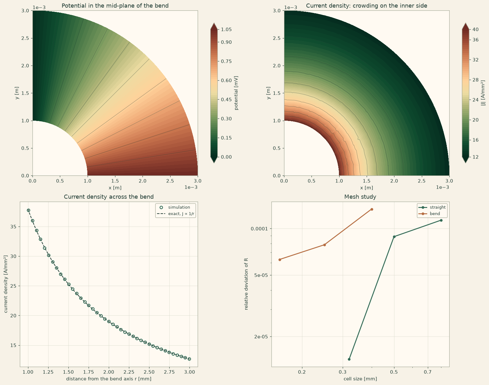
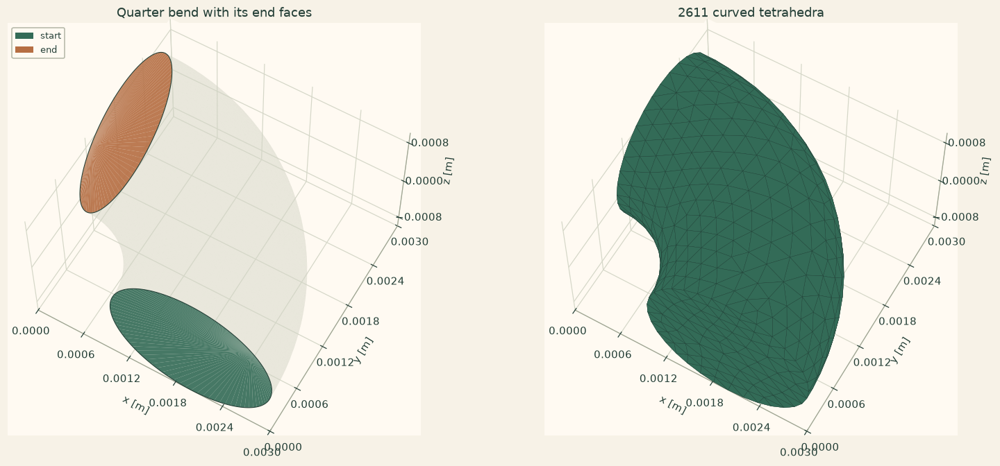

Docs › Examples › Resistance of a straight and a bent copper wire
Electric currents · 3D
Resistance of a straight and a bent copper wire
A short copper wire, straight and as a tight quarter bend, whose resistance follows from a 1 mV voltage and the current it drives.
Run locally with OneSimulation. The example downloads are free. Running them requires an activated runtime. Runtime Alpha 0.2.1a7 · CPython 3.13 on macOS (Apple Silicon), Ubuntu 22.04 (x86-64), and Windows x64. Installation and activation · View pilot plans. Scope of the reference checks.


What it computes
OneSimulation solves the steady current conduction in both pieces with quadratic elements on curved tetrahedra and takes the current from the reaction at the terminal; three meshes per piece give the convergence. The current crowding on the inner side of the bend is compared with the exact 1/r law. The script that builds the STEP file comes with the notebook.
What it checks
The straight wire matches L/(sigma A) = 106.8154 µOhm to 0.0014 % on the finest mesh, the bend the exact torus formula 15.6555 µOhm to 0.006 % (observed order 2.7), the currents balance to 1e-8, the current density follows 1/r within 0.4 %, and the centreline estimate overrates the bend by 7.2 %.
Geometry
The notebook starts at the import of the CAD files wire_resistance_straight_and_bent.step, wire_resistance_straight_and_bent_bend.step: STEP (AP242), readable by any CAD program, with the names of the faces that the boundary conditions use. Put them next to the notebook.


The geometry script
The script wire_resistance_straight_and_bent_geometry.py builds the geometry with the CAD objects of OneSimulation and writes the files. Change a dimension there, run it, and run the notebook again.
"""Geometry of the OneSimulation example "Resistance of a straight and a bent copper wire".
Builds two pieces of a copper wire of 1 mm radius with the CAD objects of OneSimulation: a straight
piece 20 mm long, written to wire_resistance_straight_and_bent.step with the faces bottom, top and
outer_wall, and a quarter bend with a centreline radius of 2 mm, written to
wire_resistance_straight_and_bent_bend.step with the end faces start and end.
"""
from onesim.cad.d3 import Box, Cylinder, Torus
radius, length, bend = 1.0e-3, 20.0e-3, 2.0e-3
Cylinder(radius=radius, length=length).save("wire_resistance_straight_and_bent.step")
quarter = Torus(major_radius=bend, minor_radius=radius) & Box(
length=2 * bend, width=2 * bend, height=2 * radius, origin=(0.0, 0.0, -radius)
).named("cut")
faces = quarter.boundaries
quarter = quarter.grouped(start=faces["cut.y_min"], end=faces["cut.x_min"])
quarter.save("wire_resistance_straight_and_bent_bend.step")The notebook
The complete notebook, cell by cell. Run it to produce the figures and the comparison printout.
A copper wire of radius \(a=1\) mm and conductivity \(\sigma=5.96\cdot10^{7}\) S/m carries a steady current. In the conductor the current density is \(\mathbf J=-\sigma\nabla V\) and charge is conserved, so the potential satisfies
This is the same equation as electrostatics with the permittivity replaced by the conductivity, and the "charge" on an electrode becomes the current through it. The voltage \(U=1\) mV is applied between the two end faces; the surface of the wire is insulated. The resistance is \(R=U/I\).
Two pieces are computed: a straight piece of length \(L=20\) mm (wire_resistance_straight_and_bent.step, faces bottom, top, outer_wall) and a quarter bend whose centreline radius is only twice the wire radius (wire_resistance_straight_and_bent_bend.step, faces start and end). The script wire_resistance_straight_and_bent_geometry.py builds both with the CAD objects of OneSimulation.
| face | condition |
|---|---|
bottom / start | \(V=U\) |
top / end | \(V=0\) |
outer_wall / rest of the bend | insulated, \(\mathbf J\cdot\mathbf n=0\) |
Reference. The straight wire has \(R=L/(\sigma\pi a^2)\). In the bend the potential grows linearly with the angle, \(V=U(1-\varphi/\theta)\), and the current density falls off as \(1/r\) with the distance from the bend axis; integrating over the circular cross-section with centreline radius \(R_b\) gives exactly (Smythe, Static and Dynamic Electricity, Ch. 6)
lower than the estimate \(\theta R_b/(\sigma\pi a^2)\) from the centreline length, because the current crowds to the shorter inner side of the bend.
import numpy as np
from onesim.cad.d2 import Plane
from onesim.cad.exchange import load
from onesim.meshing import TetrahedralMesher
from onesim.numerics import Numerics
from onesim.numerics.fem import FiniteElement, Lagrange
from onesim.numerics.linear import SparseDirect
from onesim.physics.electrostatics import (
FixedPotential,
PoissonEquation,
ZeroNormalElectricDisplacement,
)
from onesim.results.comparisons import convergence
from onesim.simulation import Problem, Simulation, regionwise
from onesim.visualization import plots, theme
theme.set()Geometry and mesh
Both pieces are meshed with second-order tetrahedra whose faces follow the round surface (geometry_order=2), at three cell sizes.
straight, bend = load("wire_resistance_straight_and_bent.step"), load(
"wire_resistance_straight_and_bent_bend.step"
)
radius, length = straight.size[0] / 2, straight.size[2]
centreline = bend.size[0] - radius
sizes = {"straight": (0.8e-3, 0.5e-3, 0.32e-3), "bend": (0.4e-3, 0.25e-3, 0.16e-3)}
meshes = {
piece: [
TetrahedralMesher(target_size=size, geometry_order=2).generate(solid)
for size in sizes[piece]
]
for piece, solid in (("straight", straight), ("bend", bend))
}
view = plots.Camera(elevation=60, azimuth=-60)
fig = plots.figure(1, 2, size=(14, 6))
plots.geometry(
bend,
selection={"start": bend.boundaries.start, "end": bend.boundaries.end},
labels=False,
camera=view,
title="Quarter bend with its end faces",
ax=fig[0],
)
plots.mesh(
meshes["bend"][1],
groups=("all",),
legend=False,
camera=view,
title=f"{meshes['bend'][1].cell_count} curved tetrahedra",
ax=fig[1],
)
plots.show()Model
The conductivity takes the place of the permittivity (regionwise with one value everywhere makes it a property law with its unit); the current through a terminal is the reaction of the fixed potential there.
conductivity, voltage = 5.96e7, 1e-3
ends = bend.boundaries
pieces = {
"straight": (
straight,
straight.boundaries.bottom,
straight.boundaries.top,
straight.boundaries.outer_wall,
),
"bend": (bend, ends.start, ends.end, ends.all - ends.start - ends.end),
}
numerics = Numerics(
spatial=FiniteElement(element=Lagrange(order=2)), linear_solver=SparseDirect()
)
models = {
piece: PoissonEquation(
domain=solid.volume,
permittivity=regionwise((), default=conductivity, unit="S/m"),
charge_density=0.0,
)
for piece, (solid, *_) in pieces.items()
}
results = {
piece: [
Simulation(
problem=Problem(
name=f"Copper wire, {piece}",
geometry=solid,
physics=(models[piece],),
boundary_conditions=(
FixedPotential(boundary=high, physics=models[piece], value=voltage),
FixedPotential(boundary=low, physics=models[piece], value=0.0),
ZeroNormalElectricDisplacement(
boundary=side, physics=models[piece]
),
),
),
mesh=mesh,
numerics=numerics,
).solve_stationary()
for mesh in meshes[piece]
]
for piece, (solid, high, low, side) in pieces.items()
}
potentials = {
piece: [result.field(models[piece].potential) for result in solved]
for piece, solved in results.items()
}Results
The resistance from the current through the high-voltage terminal, on three meshes, against the closed forms; the current through the other terminal closes the balance.
exact = {
"straight": length / (conductivity * np.pi * radius**2),
"bend": (np.pi / 2)
/ (2 * np.pi * conductivity * (centreline - np.sqrt(centreline**2 - radius**2))),
}
resistances = {
piece: [voltage / field.reaction(pieces[piece][1]) for field in fields]
for piece, fields in potentials.items()
}
print("piece cell size [mm] tetrahedra R [µΩ] exact [µΩ] deviation")
for piece, values in resistances.items():
for size, mesh, value in zip(sizes[piece], meshes[piece], values):
print(
f"{piece:9s} {1e3 * size:14.2f} {mesh.cell_count:12d} {1e6 * value:12.5f} {1e6 * exact[piece]:12.5f} {100 * (value / exact[piece] - 1):+11.4f} %"
)
study = convergence(values, sizes[piece])
print(
f"{piece:9s} observed order {study.order:.2f}, extrapolated {1e6 * study.extrapolated:.5f} µΩ ({100 * (study.extrapolated / exact[piece] - 1):+.5f} %)"
)
balance = potentials["bend"][-1].reaction(bend.boundaries.end) / potentials["bend"][
-1
].reaction(bend.boundaries.start)
print(f"current balance in the bend: I_end / I_start = {balance:+.8f}")
print(
f"centreline estimate for the bend {1e6 * (np.pi / 2) * centreline / (conductivity * np.pi * radius**2):.5f} µΩ: "
f"{100 * ((np.pi / 2) * centreline / (conductivity * np.pi * radius**2) / exact['bend'] - 1):+.2f} % above the exact value"
)Figure
The potential and the current density in the mid-plane of the bend, the current density across the bend against the \(1/r\) law, and the mesh study of both pieces.
field = results["bend"][-1].field(models["bend"].electric_field)
density = lambda E, position: conductivity * np.linalg.norm(E, axis=1) / 1e6
r = np.linspace(centreline - 0.995 * radius, centreline + 0.995 * radius, 41)
fine = np.linspace(centreline - radius, centreline + radius, 200)
across = conductivity * np.linalg.norm(
field.evaluate(np.column_stack((r / np.sqrt(2), r / np.sqrt(2), np.zeros_like(r)))),
axis=1,
)
crowding = (
lambda r: voltage
/ exact["bend"]
/ (2 * np.pi * (centreline - np.sqrt(centreline**2 - radius**2)) * r)
)
print(
f"current density across the bend: largest deviation from the 1/r law {100 * np.abs(across / crowding(r) - 1).max():.3f} %"
)
fig = plots.figure(
layout=[["potential", "density"], ["profile", "study"]], size=(14, 11)
)
plots.section(
potentials["bend"][-1],
plane=Plane(origin=(0, 0, 0), normal=(0, 0, 1)),
component=lambda V, position: 1e3 * np.ravel(V),
limits=(0, 1),
contours=11,
subdivisions=3,
label="potential [mV]",
xlabel="x [m]",
ylabel="y [m]",
title="Potential in the mid-plane of the bend",
ax=fig["potential"],
)
plots.section(
field,
plane=Plane(origin=(0, 0, 0), normal=(0, 0, 1)),
component=density,
contours=10,
subdivisions=3,
label="|J| [A/mm²]",
xlabel="x [m]",
ylabel="y [m]",
title="Current density: crowding on the inner side",
ax=fig["density"],
)
plots.line(
points={"simulation": (1e3 * r, across / 1e6)},
reference={"exact, J ∝ 1/r": (1e3 * fine, crowding(fine) / 1e6)},
xlabel="distance from the bend axis r [mm]",
ylabel="current density [A/mm²]",
title="Current density across the bend",
ax=fig["profile"],
)
plots.convergence(
None,
{
piece: (
[1e3 * size for size in sizes[piece]],
[abs(value / exact[piece] - 1) for value in values],
)
for piece, values in resistances.items()
},
xlabel="cell size [mm]",
ylabel="relative deviation of R",
title="Mesh study",
ax=fig["study"],
)
plots.show()Going further
Make the bend tighter in wire_resistance_straight_and_bent_geometry.py and the gap to the centreline estimate grows; give the wire a temperature-dependent conductivity and couple it to Joule heating; or compute the resistance of a crimp or a solder joint read from a CAD file.